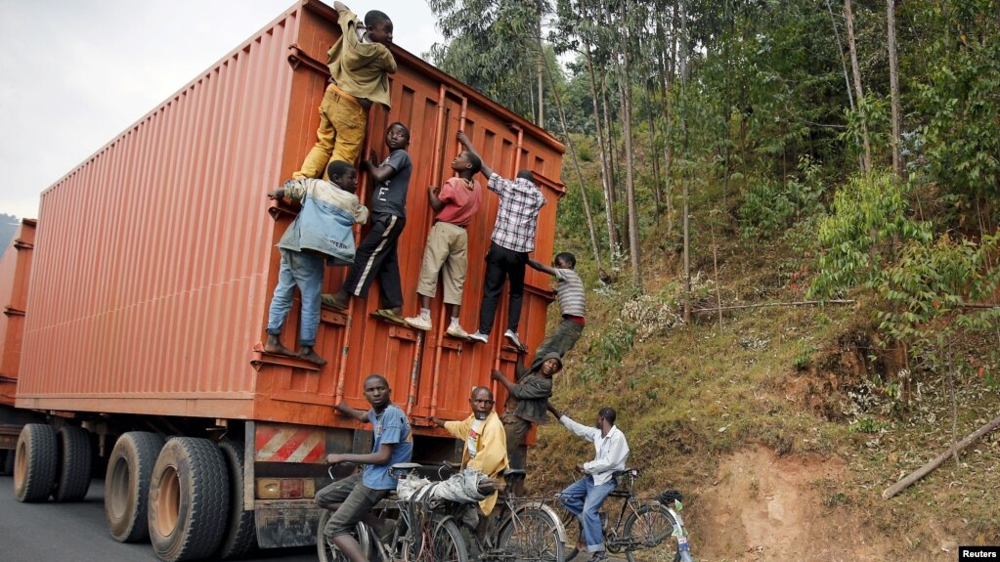

Burundi : A Complex Case of Extreme Poverty
It is one of the poorest nations in the world. Burundi achieved independence from Belgium in 1962 and since then has struggled with an internal civil war between usually-dominant Tutsi minority and the Hutu majority. On the labor rights front, Burundi has received violations on protecting the right of workers to establish and join organizations, right to collective bargaining, and the right to strike. Despite 80% of the working population are employed in a high-value export-oriented agriculture industry, where they export gold ($90.5M), coffee ($43.9M) and tea ($23.3M) to some rich countries like the United Arab Emirates, so much of their people are still poor. One might suspect that this is another case of evil corporations exploiting poorer countries, but the socioeconomic context of extremely poor Burundi is more complex to solve by simply tightening labor rights. Most of Burundi's citizens are still farming for subsistence, there is still remnants of a civil war, and a great lack of economic diversification where the economy is fragile to external factors.